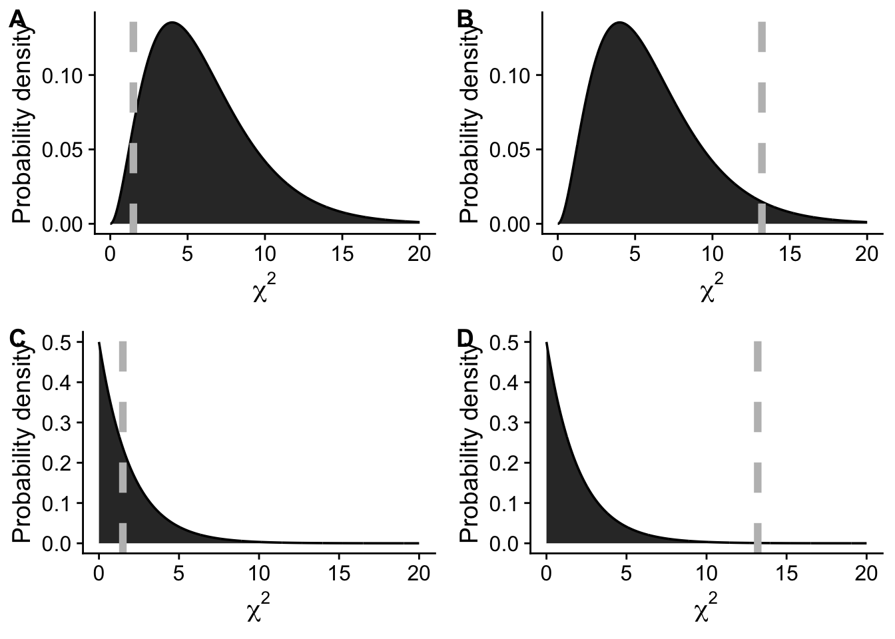

| Caucasian | Filipino | Hawaiian | Japanese | Other/mixed non-Hawaiian | |
|---|---|---|---|---|---|
| Yes diabetes | 13 | 36 | 100 | 40 | 39 |
| No diabetes | 282 | 150 | 426 | 150 | 216 |
Problem Set 07: Hypothesis tests with a \(\chi^2\) null distribution
Working with the \(\chi^2\) goodness of fit test
Suppose you have data on the frequencies of three different groups (you can imagine your favorite kinds of things—three fish species, three types of candy, three health behaviors). You would like to know if the the groups and equally represented in your data or not. Imagine this is what your data look like:
| group A | group B | group C |
|---|---|---|
| 12 | 11 | 13 |
Use the above table to answer questions 1–3.
Under the null hypothesis of equal frequencies across groups, what are the expected frequencies for groups A, B, and C? [1 point]
Calculate the \(\chi^2\) statistic for these data [1 point]
What are the degrees of freedom for these data? [1 point]
With the \(\chi^2\) statistic and degrees of freedom you just figured out, use
pchisqto calculate the \(P\)-value of the null hypothesis [1 point]Do we reject the null hypothesis? [1 point]
Diabetes prevelance in Hawaiʻi
Grandinetti et al. (2007) studied prevalence of diabetes in North Kōhala on the Island of Hawaiʻi. They found significant disparities in diabetes prevalence across ethnic groups, with Native Hawaiian and Asian individuals at higher risk of diabetes. This increased risk could not be explained by shared lifestyle risk factors, indicating that other, unmeasured, drivers were likely at play (side note from Andy: cough cough colonialism).
The table below summarizes the results of Grandinetti et al. (2007) with respect to diabetes prevalence by ethnic group.
Use the above table to answer questions 6–9.
To address the question of “are there differences in diabetes prevalence across ethnic groups?” what should our null hypothesis be? [1 point]
If you were to use a \(\chi^2\) distribution to represent this null hypothesis, what are the correct degrees of freedom? [1 point]
- 1
- 2
- 4
- 5
- 10
Use R code to make a matrix of the diabetes data. To answer this question, paste your R code into the google form [1 point]
Use
chisq.testto conduct a \(\chi^2\) null hypothesis test. Report the test statistic and \(P\)-value in the google form [1 point]
\(\chi^2\) distribution
\(\chi^2\) distribution
- Which of the following figures correctly shows a \(\chi^2\) sampling distribution with 6 degrees of freedom and a test statistic (vertical line) consistent with a \(P\)-value of 0.04. [1 point]
